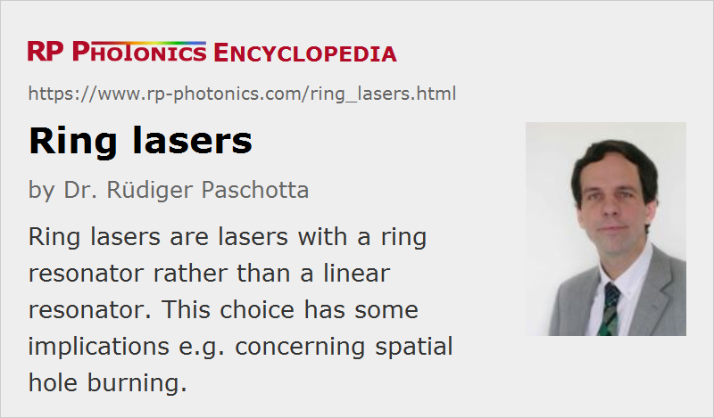

Ring Lasers
Definition: lasers with a ring resonator
More general terms: lasers
Opposite term: lasers with linear resonator
German: Ringlaser
Categories: optical resonators, lasers
How to cite the article; suggest additional literature
Author: Dr. Rüdiger Paschotta
A ring laser is a laser the resonator of which has the form of a ring. In contrast to a standing-wave (or linear) laser resonator, such a ring resonator allows for two different propagation directions of the intracavity light. In many cases, unidirectional operation (where light propagates only in one of the two possible directions) is enforced by introducing an element into the resonator which leads to different losses for the propagation directions (Figure 1); this can be, e.g., a Faraday rotator combined with a polarizing element (e.g. a Brewster surface of the laser crystal). If unidirectional operation is achieved, there is no standing-wave interference pattern in the laser gain medium (except near reflection points), and consequently no spatial hole burning. Therefore, single-frequency operation is easily achieved. Particularly for solid-state bulk lasers, unidirectional ring laser designs can be considered as a standard approach to obtain stable single-frequency emission.

A popular kind of solid-state ring laser is the nonplanar ring oscillator, also called NPRO or MISER. This is a monolithic laser design (Figure 3), where the whole laser resonator consists only of a coated crystal. Although the fabrication of such crystals is somewhat more complicated than for ordinary laser crystals, alignment is fairly easy, and such lasers are very stable and robust.
There are also fiber lasers with ring resonator configurations. Fiber ring lasers are more often mode-locked lasers than single-frequency lasers. A frequently used configuration is that of the figure-of-eight laser [4], containing a nonlinear loop mirror as effective saturable absorber. The ring geometry then does not serve to avoid spatial hole burning, but rather follows from the principle of the artificial saturable absorber (a nonlinear loop mirror) as required for pulse shaping.
There are other ring lasers, used e.g. in optical gyroscopes, where bidirectional operation is required. Outside the laser resonator, a beat note of the beams corresponding to the different propagation directions can be detected, and the beat frequency reveals the angular frequency of rotation of the laser (Sagnac effect). Special care is often required in order to avoid coherent locking of the counterpropagating waves. In particular, it is necessary to avoid even very weak parasitic reflections (e.g. on imperfect laser mirrors) which can couple the counterpropagating modes.
Questions and Comments from Users
Here you can submit questions and comments. As far as they get accepted by the author, they will appear above this paragraph together with the author’s answer. The author will decide on acceptance based on certain criteria. Essentially, the issue must be of sufficiently broad interest.
Please do not enter personal data here; we would otherwise delete it soon. (See also our privacy declaration.) If you wish to receive personal feedback or consultancy from the author, please contact him e.g. via e-mail.
By submitting the information, you give your consent to the potential publication of your inputs on our website according to our rules. (If you later retract your consent, we will delete those inputs.) As your inputs are first reviewed by the author, they may be published with some delay.
Bibliography
| [1] | T. J. Kane and R. L. Byer, “Monolithic, unidirectional single-mode Nd:YAG ring laser”, Opt. Lett. 10 (2), 65 (1985), doi:10.1364/OL.10.000065 |
| [2] | W. W. Chow et al., “The ring laser gyro”, Rev. Mod. Phys. 57, 61 (1985), doi:10.1103/RevModPhys.57.61 |
| [3] | S. De Silvestri et al., “Rod thermal lensing effects in solid-state laser ring resonators”, Opt. Commun. 65 (5), 373 (1988), doi:10.1016/0030-4018(88)90106-X |
| [4] | I. N. Duling III, “All-fiber ring soliton laser mode locked with a nonlinear mirror”, Opt. Lett. 16 (8), 539 (1991), doi:10.1364/OL.16.000539 |
| [5] | M. K. Reed and W. K. Bischel, “Acousto-optic modulators as unidirectional devices in ring lasers”, Opt. Lett. 17 (9), 691 (1992), doi:10.1364/OL.17.000691 |
| [6] | K. Tamura et al., “77-fs pulse generation from a stretched-pulse mode-locked all-fiber ring laser”, Opt. Lett. 18 (13), 1080 (1993), doi:10.1364/OL.18.001080 |
| [7] | L. E. Nelson et al., “Ultrashort-pulse fiber ring lasers”, Appl. Phys. B 65, 277 (1997), doi:10.1007/s003400050273 |
| [8] | K. I. Martin et al., “Stable, high-power, single-frequency generation at 532 nm from a diode-bar-pumped Nd:YAG ring laser with an intracavity LBO frequency doubler”, Appl. Opt. 36 (18), 4149 (1997), doi:10.1364/AO.36.004149 |
| [9] | G. E. Stedman, “Ring-laser tests of fundamental physics and geophysics”, Rep. Prog. Phys. 60, 615 (1997), doi:10.1088/0034-4885/60/6/001 |
| [10] | D. Panasenko et al., “Er–Yb femtosecond ring fiber oscillator with 1.1-W average power and GHz repetition rate”, IEEE Photon. Technol. Lett. 18 (7), 853 (2006), doi:10.1109/LPT.2006.871821 |
| [11] | K. Kieu and M. Mansuripur, “All-fiber bidirectional passively mode-locked ring laser”, Opt. Lett. 33 (1), 64 (2008), doi:10.1364/OL.33.000064 |
| [12] | R. Paschotta, case study on a ring resonator |
See also: laser resonators, spatial hole burning, single-frequency lasers, single-frequency operation, nonplanar ring oscillators, fiber lasers
and other articles in the categories optical resonators, lasers
|  |
If you like this page, please share the link with your friends and colleagues, e.g. via social media:
These sharing buttons are implemented in a privacy-friendly way!